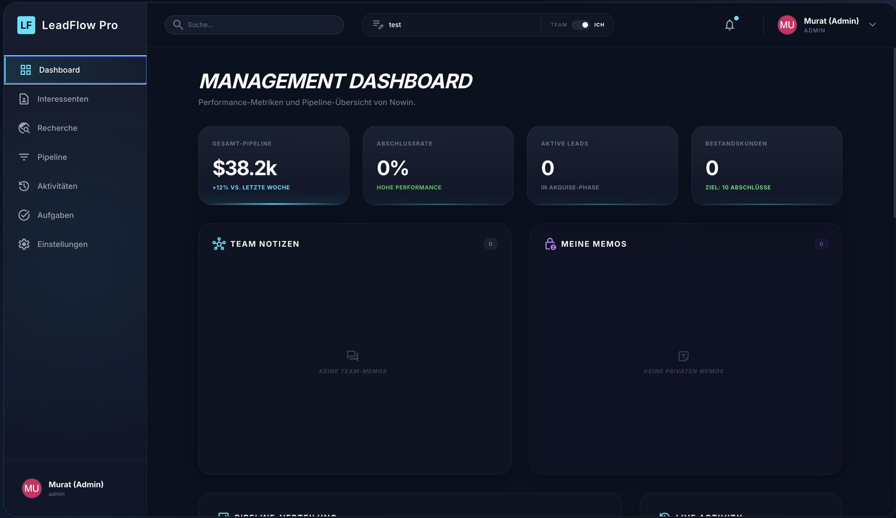
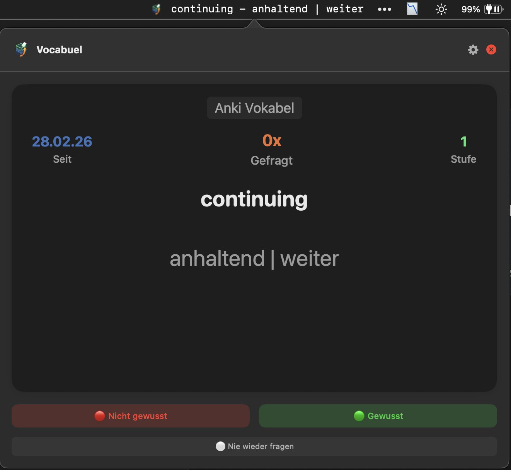
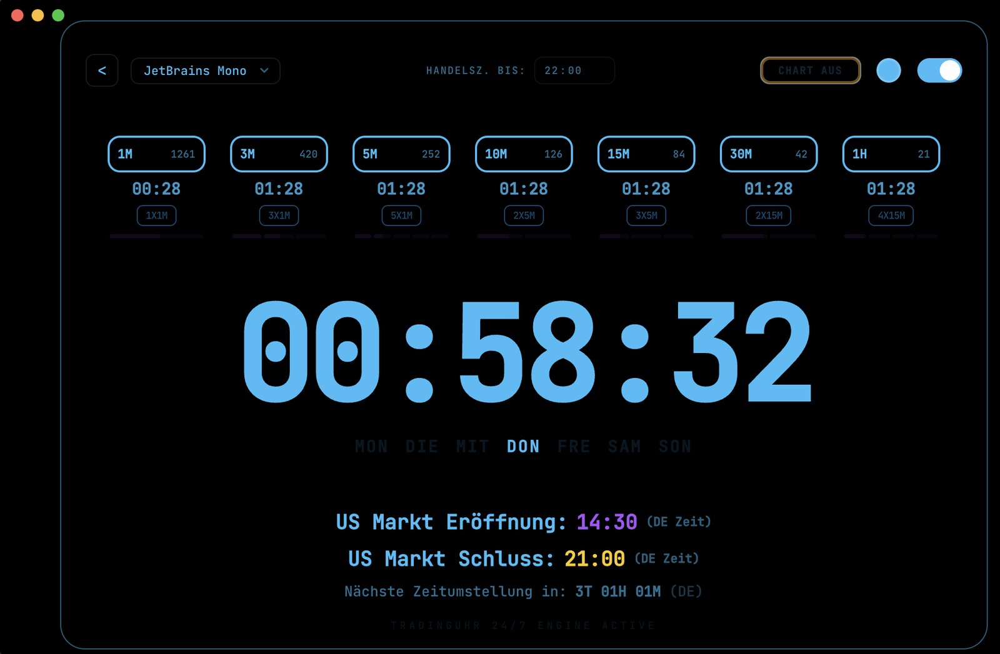
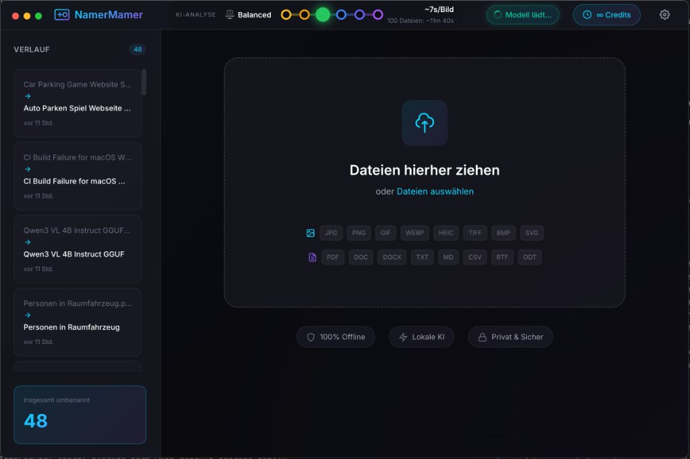
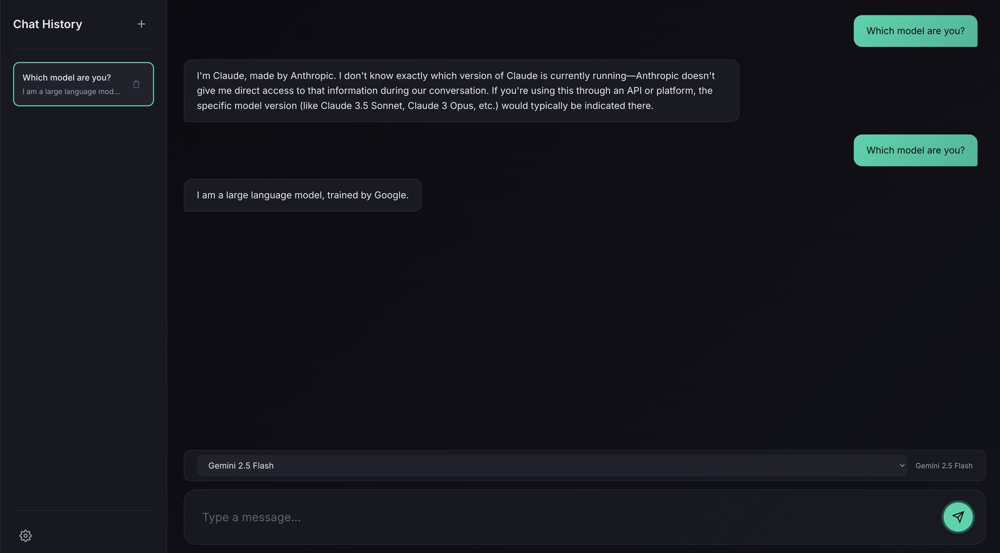
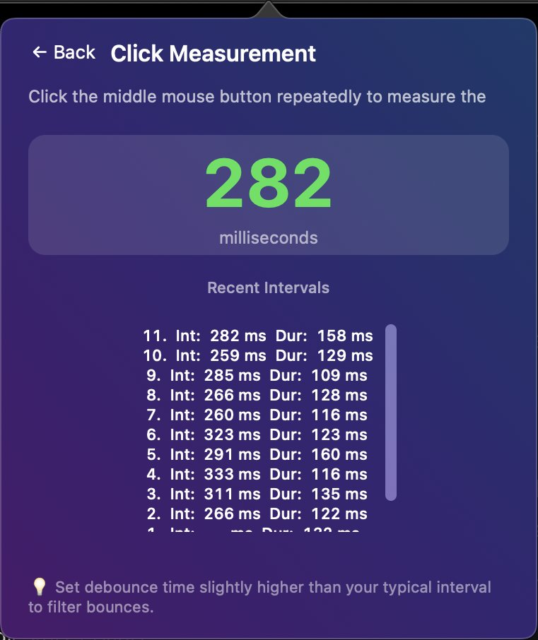

Bauen mit Agenten
Claude Code, Codex und Gemini arbeiten parallel; ich plane, verteile und prüfe jedes Ergebnis selbst.
KI-Entwickler & Automatisierung · Köln
Ich baue Software mit KI-Agenten – von der Idee bis zur veröffentlichten Version.
Eigene Desktop-Apps, n8n-Automatisierungen und agentische Systeme. Staatlich geprüfter informationstechnischer Assistent, seit Ende 2022 täglich mit KI am Bauen.
Claude Code, Codex und Gemini arbeiten parallel; ich plane, verteile und prüfe jedes Ergebnis selbst.
Tests, Browser-Kontrolle und klare Trennung zwischen „eingerichtet“, „getestet“ und „noch offen“.
Entscheidungen mit Datum und Grund, damit andere übernehmen können.
Lokale Spracherkennung mit globalem Hotkey: diktieren in jedes Programm, dazu Werkzeuge für die Arbeit mit Prompts. Eigenständig konzipiert, gebaut, veröffentlicht und laufend weiterentwickelt, mit Webseite auf Deutsch und Englisch.
WebseiteÜben mit Videos und Audio: Schleifen, Tempo, Takte direkt auf der Zeitleiste. Entscheidungen halte ich in einem Architekturprotokoll fest; automatische Tests und signierte Pakete.
WebseiteRAG-Workflow in n8n: Zwölf Richtlinien-PDFs werden in eine Vektordatenbank geladen, ein Agent beantwortet Fragen dazu, und n8n bewertet die Antworten automatisch. Im zweiten Bewertungslauf stieg die Korrektheit von 4,25 auf 4,50 von 5. Ergebnis-Mail von n8n am 09.09.2025: „You are a winner!“
Gewinner im Community Contest, einer von mehreren Preisträgern.
Dateien im Finder markieren, Hotkey drücken, sagen was passieren soll – etwa „Nach Inhalt umbenennen“ oder „Sortiere nach Datum“. Ein Sprachmodell erkennt die Absicht; Bilder und PDFs werden lokal analysiert, in die Cloud gehen nur Dateinamen und Metadaten.
Code auf GitHubMehrere KI-Agenten arbeiten mit einem gemeinsamen Gedächtnis aus Markdown-Notizen. Aufgaben werden verteilt, Ergebnisse gegengeprüft, Entscheidungen mit Quellen protokolliert. Dieses Portfolio ist so entstanden.
Viele Repositories sind privat. Demos zeige ich gern im Gespräch.

CRM mit Lead-Scoring und Echtzeit-Synchronisation.
privat
macOS-Menüleisten-App für englische Vokabeln mit Leitner-System.
privat
macOS-App für Marktzeiten und Handelssimulation.
privat
lokale, offline arbeitende KI-Dateiumbenennung mit Bild- und Dokumenterkennung.
privat

YouTube-Transkripte in Prompts für Gemini und ChatGPT verwandeln.
privatHLS-Streaming-App für Kick.com auf LG-Fernsehern.
Code auf GitHubDocker-Datenpipeline für Marktdaten, Python
Brettspiel im Browser
Code auf GitHubKonzept und vollständiges Material für einen KI-Kurs in zwei Stufen (Einsteiger und Fortgeschrittene): Folien, Handouts, Regiebuch.
YouTube-Kanal zu KI-Themen; Videos werden per Code und KI-Stimme produziert.
Köln
Ich freue mich über Nachrichten – am liebsten mit einer konkreten Aufgabe, die ich zeigen oder lösen kann.